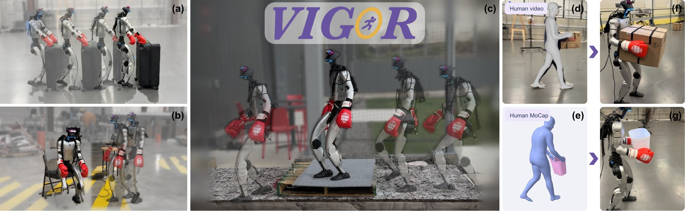
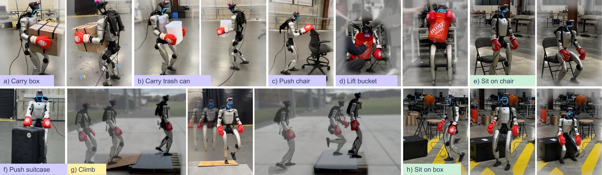
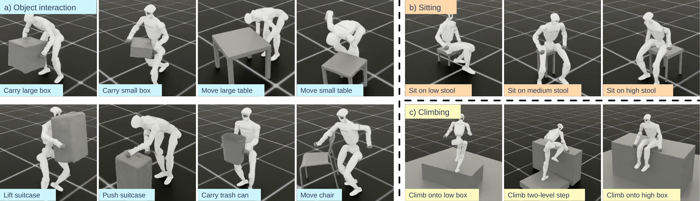

Retarget
Human motion becomes a robot reference that preserves the intended whole-body behavior.
Humanoid whole-body control
VIRGO learns from human demonstrations to guide a shared visuomotor policy across object interaction, sitting, and climbing.
Reference-guided · Visuomotor · Sim-to-real

Human demonstrations offer rich examples of how to move, carry, climb, and sit. VIRGO studies how to turn those references into a shared policy that responds to both the desired motion and what the robot sees.
A two-stage route
Human motion becomes a robot reference that preserves the intended whole-body behavior.
State-based reinforcement learning experts follow groups of reference motions in simulation.
Expert supervision, behavior cloning, and online data collection train one reference-conditioned visuomotor student.
The student combines visual feedback, proprioception, and MoCap or video-derived references.

Across tasks and settings

Illustrative sequences from the VIRGO manuscript show object handling, chair and box interactions, sitting, and climbing.

The simulated task set spans object interaction, sitting at different heights, and climbing across different platforms.
Project summary
VIRGO explores a visual sim-to-real route for learning diverse humanoid skills from human demonstrations. It first trains reference-tracking reinforcement learning experts in simulation, then distills their behavior into a shared, reference-conditioned visuomotor policy.
At deployment, a MoCap or video-derived reference specifies the desired behavior while visual and proprioceptive observations help the robot respond to its surroundings. The project studies object interaction, sitting, and climbing as a unified whole-body control problem.